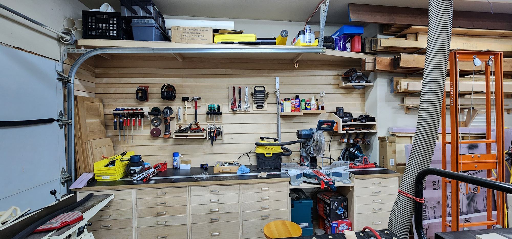
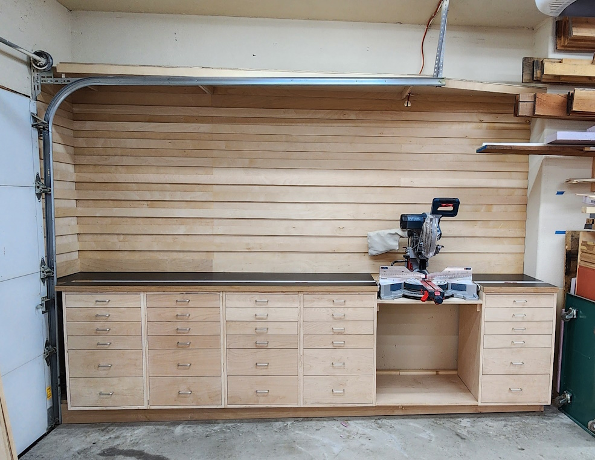

The miter saw station and French cleat wall are finally done—10 feet of countertop, stop blocks on both sides of the saw, 30 drawers, and a storage shelf. Now to load it up with stuff.

Finished station — July 2024
Build time: 11 weekends (March–June 2024)
Size: ~10-foot countertop run along the garage wall
Features: 30 drawers, French cleat wall, StealthStop blocks, storage shelf
Main materials: plywood, MDF, laminate/Formica, T-track
Plan: Wittworks miter saw station
Status: Complete — organizing the cleat wall is ongoing
Jump to: Overview · Backstory · Build details · Cabinet base · Countertops · French cleat wall · Drawers · Leveling fix · Finished station · Lessons learned
A Second Chance
I bought a truckload of plywood in December for a project my son was working on. Most of it sat in the garage for months until spring break, when I finally put it to use building this station. The lumber got a second chance—and so did the garage wall, which went from ad-hoc storage to a permanent home for the miter saw.
I built the cabinets from the Wittworks miter saw station plan, adapting it to my space: the run covers a window (I kept the sill) and spans a garage floor that drops about 2 inches from back to front.
Practical build notes
- Overall size: roughly 10 ft along the wall, following the Wittworks cabinet layout; counter depth is standard base-cabinet depth (~25 in.).
- Drawers: 30 total in mixed widths per the Wittworks plan—small bins up front, wider drawers under the saw wings.
- Countertops: 3/4-in. MDF base plus a 1/2-in. MDF layer with embedded T-track, edge-banded with poplar, then covered with laminate/Formica.
- StealthStop: I chose Woodpeckers StealthStop blocks because they sit low in the T-track and give repeatable stop positions on both sides of the saw without bulky fences.
- Garage slope: the floor drops ~2 in. side to side. I shimmed the toe kick and wall cleats to follow the floor, but that was not enough—I should have referenced a laser level from the start (see leveling fix).
- What I'd do differently: pull out the laser level before mounting cabinets, not after drawer fronts reveal the problem; build and install drawers in smaller batches with fronts test-fit earlier.
I discovered the Plywood Company of Fort Worth through the Wittworks video, and that's where I purchased the wood for this project. They have much better prices and selection than Home Depot or Lowe's. It's a fantastic place to pick up sheet goods and hardwood—I just wish it was closer to my house.
Cabinet Base
Weekends 1–2
Work started during spring break and continued over 11 weekends. The first two weekends were spent building the base cabinet cases and getting the toe kick in place. The fun part was building on the side of a garage with a 2-inch slope in the floor—every horizontal surface needed shimming before it could be trusted.
Countertops and Stop Blocks
Weekends 3–5
The third weekend was spent adding drawer runners, mounting the cabinets to the wall, and starting the countertops. I built the cabinets and French cleat wall to cover the window, but I didn't want to remove the window sill.
The fourth weekend was spent finishing the countertops— a 3/4-in. sheet of MDF and a 1/2-in. sheet with embedded T-track for stop blocks on both sides of the miter saw. I chose StealthStop from Woodpeckers, edge-banded the MDF with poplar hardwood, and started on the French cleat wall above the counter.
The fifth weekend was spent covering the countertops with laminate and building the top storage shelf.
French Cleat Wall
Weekend 6
The sixth weekend was spent attaching French cleats to the wall—a flexible system for hanging tools, jigs, and storage as the shop evolves.
Drawer Build
Weekends 7–9
The seventh weekend was spent starting on the drawers—breaking down plywood for the four sides and assembling the first 6 of 30 drawers. I was already using the new miter saw setup with stop blocks for the cuts.
The eighth weekend was spent knocking out another 14 drawer boxes. The ninth weekend finished the remaining boxes and started on the drawer fronts.
Fixing the Square/Level Issue
Weekend 10
On the tenth weekend, I had to pull out all the base cabinets because I discovered they were not square while attaching the drawer fronts. This time, I used a laser level and did a much better job of leveling and squaring the cabinets.
Lessons learned
Lesson learned: use the laser level earlier. Shimming the toe kick to match a sloped garage floor got the cabinets close, but drawer fronts exposed the twist. Pulling everything back out and re-mounting with a laser reference took a full weekend—time I would have saved by leveling against a fixed reference line from day one.
Finished Station
Weekend 11
On the eleventh weekend, I finished attaching all the drawer fronts and handles. It's now ready to be put to use.

Finished detail — countertop, stop block, and drawers
This was one of those projects that immediately changed how the shop feels. The miter saw finally has a permanent home, the drawers are ready for organization, and the French cleat wall gives me room to keep improving the setup over time. The lengthy task of organizing tools on the cleat wall is ongoing—but the station itself is done.